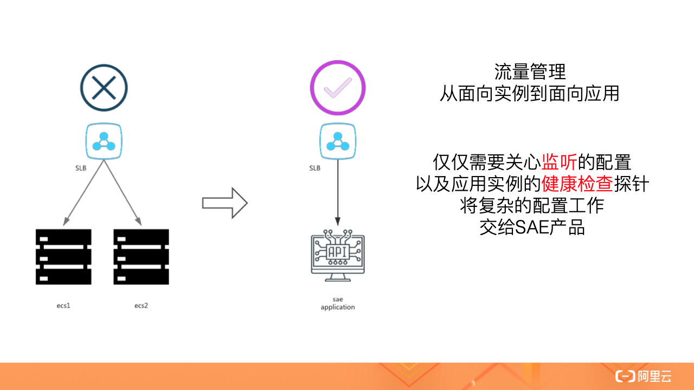
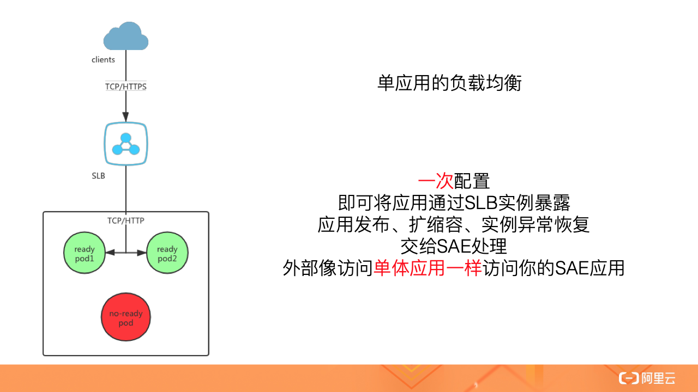
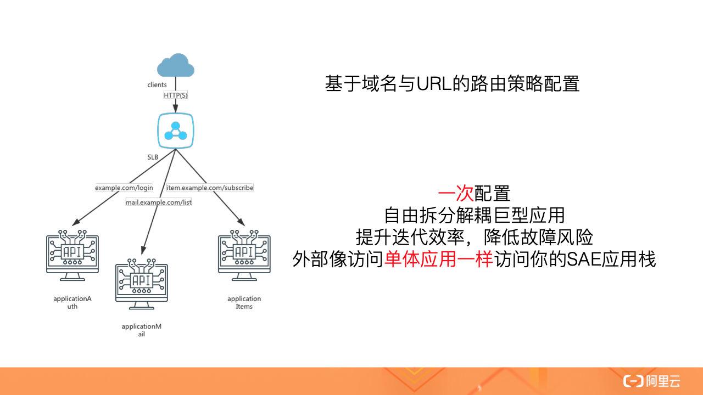
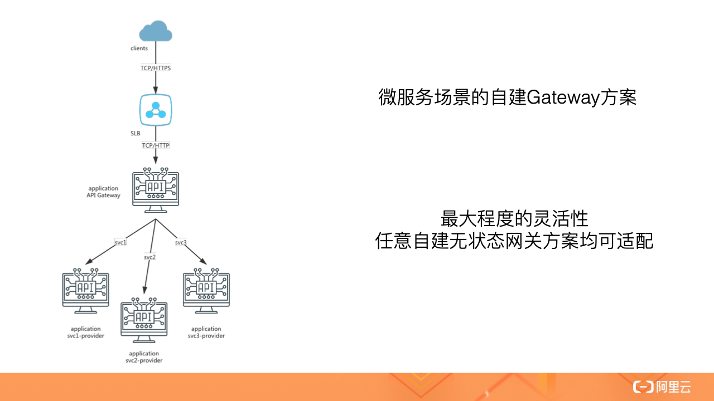

- 01 架构的演进.md
- 02 Serverless 的价值.md
- 03 常见 Serverless 架构模式.md
- 04 Serverless 技术选型.md
- 05 函数计算简介.md
- 06 函数计算是如何工作的？.md
- 07 函数粘合云服务提供端到端解决方案.md
- 08 函数计算的开发与配置.md
- 09 函数的调试与部署.md
- 10 自动化 CI&CD 与灰度发布.md
- 11 函数计算的可观测性.md
- 12 典型案例 1：函数计算在音视频场景实践.md
- 13 典型案例 3：十分钟搭建弹性可扩展的 Web API.md
- 14 Serverless Kubernetes 容器服务介绍.md
- 15 Serverless Kubernetes 应用部署及扩缩容.md
- 16 使用 Spot 低成本运行 Job 任务.md
- 17 低成本运行 Spark 数据计算.md
- 18 GPU 机器学习开箱即用.md
- 19 基于 Knative 低成本部署在线应用，灵活自动伸缩.md
- 20 快速构建 JenkinsGitlab 持续集成环境.md
- 21 在线应用的 Serverless 实践.md
- 22 通过 IDEMaven 部署 Serverless 应用实践.md
- 23 企业级 CICD 工具部署 Serverless 应用的落地实践.md
- 24 Serverless 应用如何管理日志&持久化数据.md
- 25 Serverless 应用引擎产品的流量负载均衡和路由策略配置实践.md
- 26 Spring CloudDubbo 应用无缝迁移到 Serverless 架构.md
- 27 SAE 应用分批发布与无损下线的最佳实践.md
- 28 如何通过压测工具+ SAE 弹性能力轻松应对大促.md
- 29 SAE 极致应用部署效率.md
25 Serverless 应用引擎产品的流量负载均衡和路由策略配置实践
流量管理从面向实例到面向应用

在 Serverless 场景下，由于弹性能力以及底层计算实例易变的特性，后端应用实例需要频繁上下线，传统的 ECS 场景下的负载均衡管理方式不再适用。
SAE 产品提供给用户面向应用的流量管理方式，不再需要关心弹性场景以及发布场景的实例上下线，仅仅需要关心监听的配置以及应用实例的健康检查探针，将面向实例的复杂配置工作交给 SAE 产品。
单应用的负载均衡配置

对于单个应用，SAE 产品支持将应用服务通过公网或私网 SLB 实例监听暴露，目前支持仅支持 TCP 协议。考虑到传统的 HTTP 类型应用存在 HTTPS 改造的需求，SAE 还支持配置 HTTPS 监听，让 HTTP 服务器无需修改就能够对外提供 HTTPS 服务。
公网 SLB 用于互联网客户端访问，会同时产生规格费与流量费用；私网 SLB 用于 VPC 内客户端访问，会产生规格费用。
为了让 SAE 产品能够准确控制实例上下线时机，用户需要在部署时正确地配置探针，避免业务出现损失。
多应用的路由策略配置

大中型企业在实践中，常常会将业务拆分成不同的应用或者服务，例如将登陆服务、账单服务等关联度较高的部分，单独拆分为应用，独立进行研发以及运维，再对外通过统一的网关服务进行暴露，对用户来说就像使用单体应用一样。
SAE 提供基于 SLB 实例的网关，将流量按照域名以及 HTTP Path 转发到不同的应用的实例上，从功能上对标业界的 Nginx 网关。
公网 SLB 实例实现的网关用于互联网客户端访问，会同时产生规格费与流量费用；私网 SLB 实例实现的网关用于 VPC 内客户端访问，会产生规格费用。
自建微服务网关

对于微服务场景中常见的微服务网关，SAE 并没有提供产品化的支持，但用户依然可以自由发挥，在 SAE 中部署自建的微服务网关。
实践中，微服务网关也可以作为一个应用，部署到 SAE 中。微服务网关会根据用户自定义的配置，将业务流量转发到提供微服务的实例中。微服务网关作为应用，也是可以通过 SLB 实例对公网以及私网暴露服务。
结语
不管是传统的单应用场景，还是拆分后的多应用场景，以及现在比较流行的微服务场景，在流量管理以及路由策略上，SAE 产品都提供了完整的解决方案，依赖可靠的云产品提供基础网络设施，并尽可能地降低用户的使用成本。用户只需要极低的学习成本，即可在 SAE 控制台白屏化管理自己的流量，或者部署自建的网关应用。
实操演示
演示内容（点击可查看参考文档）：
演示内容请点击视频课观看：https://developer.aliyun.com/lesson*2026*19007
© 2019 - 2023 Liangliang Lee. Powered by gin and hexo-theme-book.